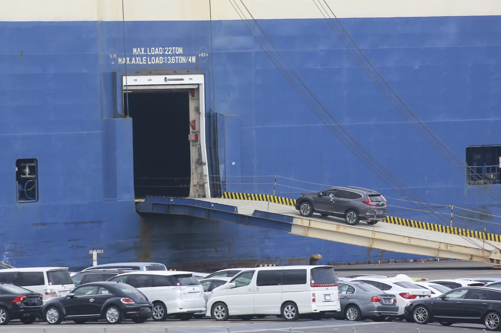

Every Japanese auction. One agent. Your name on the car.
Foreign buyers cannot bid at Japan's dealer-only auctions — you need a licensed member inside Japan. AN International Japan holds that membership. Tell Henry what you want; he bids, inspects, and ships it to your port, anywhere in the world.
Japan's 120+ auto auctions are closed to the public and to foreign buyers. Membership is reserved for licensed Japanese dealers and exporters. AN International Japan holds the licensed dealer/exporter memberships to buy and collect vehicles from the auction networks across Japan — USS, TAA, CAA, JU, ARAI, HAA Kobe, Aucnet and more. When you buy through Henry, you are not paying a chain of middlemen: you are bidding through the licensed member itself.
Send this to any buyer — Henry's pitch
“We are a licensed Japanese dealer/exporter and a direct member of the auction houses — USS, TAA, CAA, JU, ARAI and 120+ venues. You cannot bid there yourself; we bid for you, translate the auction sheet, and ship to your port.”
This week at auction
Cars buyers ask Henry for
Roughly 150,000 vehicles pass through Japanese auctions every week. These are the models dealers, showrooms and enthusiasts most often order through us — click any car for its full details and more photos. Live stock changes daily — message Henry for today's list with grades and prices.
How it works
From auction floor to your port in 4 steps
1
Tell Henry your requirement
Model, year, budget, grade — by WhatsApp or email. Henry searches the coming week's auctions across all networks and sends you matching cars with translated auction sheets.
2
We bid for you
You set your maximum bid and pay a bidding deposit. Henry bids live on auction day and confirms the result the same day — won or not, you know immediately.
3
Inspect & confirm
Before you commit fully, you receive detailed photos, the auction sheet and condition information for the exact car — no surprises after payment.
4
Export & shipping
We complete all export documentation and ship by RoRo or container to ports across the globe. You receive the export certificate, bill of lading and invoice set.
Where our buyers are
Worldwide delivery, dealer-first
AN International delivers to Ireland, the United Kingdom, Jamaica, Cyprus, Kenya, Mongolia, Australia, Pakistan and Malaysia — and ships to ports worldwide. Most of our buyers are dealers and showrooms who order every month; enthusiasts order single dream cars the same way.
Kenya — MombasaTanzania — Dar es SalaamUAE — Jebel Ali (re-export hub)Pakistan — KarachiUnited KingdomIrelandCyprusJamaicaMongolia — via China/Russia routesAustraliaNew ZealandMalaysiaChileSouth Africa — Durban
Demand · Policies
Tell us your demand, read the rules first
Two things buyers asked for, now on this site: a place to state exactly what car you want and get instant suggestions, and our full policies — payment, deposit, shipping and refunds — written down before you pay anything.
Tell Your Demand
Model, year, budget, port — fill the 2-minute demand form. You get instant model suggestions on screen, plus Henry's personal shortlist on WhatsApp.
Our Policies
Payment, bidding deposit, inspection, shipping, cancellation & refund, documents and condition — all policies in one place, in plain language.
Not sure which car fits your budget?
Use the demand form — pick your country, budget and vehicle type, and the page instantly suggests the models dealers in your market order most. Then send the same demand to Henry in one tap.
Auction stock — sourced to order
Popular cars from Japanese auctions
We don't sit on old stock — we buy the exact car you choose, fresh from this week's auctions. Below are the models our dealers and enthusiasts order most, plus the current listings from our main company website. Click any car to open its own page — full specifications, more photos, and how to order that exact car. Every car comes with its auction sheet translated into English and a grade you can verify. Prices move with the auction market, so each listing works the way our main site does: ask Henry for today's price.
How to read an auction grade
Every auction car is inspected by an inspector employed by the auction house — not the seller — who writes the auction sheet: overall grade, interior grade, mileage, equipment, accident/repair history and a body diagram marking scratches, dents and replaced panels.
5 / 4.5 — excellent to very clean · 4 — good, normal light marks · 3.5 — average, noticeable wear · 3 — rough · R / RA — accident-repaired, disclosed on the sheet.
Henry translates the full sheet for you before you bid — including the handwritten Japanese comments most buyers never see.
Can't see your car?
With ~150,000 cars auctioned every week, almost anything sold in Japan is reachable: kei cars, hybrids, luxury SUVs, sports and JDM classics, trucks and heavy machinery.
Send Henry the model, year range, colour and budget — he will search the coming week's sales at USS, TAA, CAA, JU, ARAI, HAA Kobe and the online auctions and send you real candidates with sheets and photos.
Japanese auto auctions are the wholesale heart of the used-car world: 120+ venues, roughly 150,000 vehicles sold every week, around 7 million a year. They are members-only — a licensed Japanese business, deposits and standing with each auction group are required. That membership is exactly what AN International holds, and what you buy through.
An auction yard in Japan — every car in the rows carries an inspection sheet from the auction house's own inspector.
The biggest single sales
Giant venues, every week
Venue
Auction day
Scale
Known for
USS Tokyo
Thursday
14,000+ cars in one day
The world's largest single car auction
USS Nagoya
Friday
~7,000 cars
Our home-region giant — short, cheap transport to Nagoya port
HAA Kobe
Saturday
~9,300 cars / week
The largest auction in the Kansai region
USS group (all venues)
Mon–Sat
55,000+ cars / week
Japan's largest auction network, 18+ halls
All Japan auctions
Mon–Sat
~150,000 cars / week
120+ venues; no auctions on Sundays
Sources: Japan Overseas Corporation auction guide; JapanAuc auction explainer — see .
The Aichi advantage: AN International is based in Aichi — home to USS Nagoya, CAA in Toyota City and Nagoya port. Inland transport from our local auctions to Nagoya port typically runs ¥12,000–¥18,000 per car, against ¥45,000–¥65,000 from far regions like Hokkaido. That saving goes straight into your landed price.
Watch
See an auction with your own eyes
Two widely shared walkthroughs of USS Tokyo — the scale, the bidding halls, and how a car sells in about 30 seconds.
“Bidding on cars at Japan's biggest car auction” — a walkthrough of USS Tokyo. Watch on YouTube
Car Dealer Magazine goes behind the scenes at USS Tokyo with importer Nichibo — 18,000+ cars sold the day they visited. Read the story
Buying guide
How to buy from Japanese auctions
The full process, with the money side explained honestly — deposits, price types, documents and shipping — the same way the big exporters do it.
1
Register & tell us your requirement
Message Henry on WhatsApp or email with the model, year, budget and destination port. No registration fee. Henry confirms what is realistic at current auction prices before you spend anything.
2
Pay a bidding deposit
Auction buying starts with a refundable-style bidding deposit, credited to your purchase when you win. Published deposits at Japanese exporters typically run ¥100,000–¥250,000 (or ~20–50% of the bid on higher-value cars). Henry confirms AN International's exact deposit for your bid in writing before you transfer.
3
Choose your cars & set your max bid
Before auction day you receive candidate cars with fully translated auction sheets and photos. You set the maximum bid per car — we never bid above it.
4
We bid live & confirm the same day
Henry bids at the auction. Win or lose, you hear the same day. If we win, you receive the proforma invoice showing the car, the price basis (FOB / C&F / CIF) and our official company bank details.
5
Pay by bank transfer (TT)
Payment is by international telegraphic transfer to the company's official bank account — the standard method across the industry. As at most exporters, the balance is completed before shipment, and original documents are released after full payment.
6
Inspection, documents & shipping
We deregister the car, arrange any pre-shipment inspection your country requires (for example QISJ for Kenya, EAA for Tanzania), book the vessel and send your document set. You clear customs and pay duty at your end with the documents we provide.
FOB, C&F or CIF — know your price basis
FOB (Free on Board) — covers the vehicle up to the point it is loaded for export in Japan.
C&F / CFR (Cost & Freight) — freight to your destination port is included; insurance is not.
CIF (Cost, Insurance & Freight) — vehicle, freight and insurance to the named port are all included.
Duty, tax, customs clearance, port charges and local delivery in your country are always separate. Never compare one exporter's FOB price with another's CIF price.
What sits on top of the hammer price
An auction purchase adds: the auction house fee, the exporter/agent fee, the recycling fee, inland transport to the port or yard, deregistration and export paperwork, pre-shipment inspection where required, and freight/insurance if you buy CIF.
For scale: published all-in FOB service fees at Japanese exporters run about ¥85,000 on a car up to ¥600,000, rising to ¥200,000 above ¥2 million hammer price; some agents instead charge a flat ~3.5% commission. Henry quotes your total up front — the number on your invoice is the number you plan around.
Your document set
Export (deregistration) Certificate · Bill of Lading · Final Invoice & Packing List · Marine Insurance certificate (on CIF shipments) · Pre-export Inspection Certificate where your country requires one.
RoRo or container?
RoRo is the default: the car is driven on and off a purpose-built carrier — the most cost-effective method, typically 30–50% cheaper than a container, with frequent sailings. The car must be running and nothing may be packed inside it.
Container suits high-value cars, non-runners, or dealers consolidating 3–4 cars in a shared 40ft container — better protection, higher single-car cost.

A vehicle boarding a RoRo carrier in Japan — the way most exported cars travel. Process, fee and document details on this page follow published exporter practice (SAT Japan FAQ; Coral Net; Japan Car Direct; CSO Japan) — full references on the Company page.
Safety first: only ever transfer to the bank account shown on your official invoice, in the company name. Henry will happily verify everything on a video call — showing you the office, the yard and your car — before you send a yen.
The market, in numbers
Japan's used-car exports, year by year
How big is the market you are buying from? These are official-series figures for all of Japan — published so you can judge the market (and us) on facts. Different trade bodies count slightly differently, so each series is named.
Used vehicles exported from Japan per year
Export deregistrations (JADA series). The JUMVEA series, which counts vehicles priced ¥200,000 and above, gives 1,708,604 for 2025 — either way, 2025 was a record year of roughly 1.6–1.7 million cars.
Who buys the most
Top buyer countries, 2025
Where Japan's used cars actually went in 2025 (JUMVEA destination statistics). The UAE is largely a re-export hub — most of its cars move on to Africa, Central Asia and neighbouring markets, so its buyers are mainly traders and dealers. Africa as a region took about a quarter of all passenger-car exports.
#
Country
Cars in 2025
Who buys there
1
UAE
253,897
Traders & dealers — re-export hub for Africa & Central Asia
2
Russia
186,583
Dealers & private importers, mainly via Vladivostok
3
Tanzania
119,036
Dealers through Dar es Salaam; demand grew 52.6% in a year
4
Chile
83,523
Dealers via Iquique free zone
5
Kenya
77,286
Dealers & showrooms via Mombasa — one of AN's listed markets
6
New Zealand
71,633
Dealers & private buyers
7
Mongolia
66,469
Dealers — one of AN's listed markets; hybrids dominate
8
South Africa
64,555
Dealers via Durban (much of it transit trade)
9
Sri Lanka
62,335
Dealers & private buyers
Note: a second published series (Provide Cars, JUMVEA-based) puts the UAE at 252,637 and Russia at 186,584 for 2025 — totals differ slightly by counting method; the ranking is the same. In early 2026, Middle East shipping disruption pushed UAE volumes down sharply, with Russia first, then Tanzania, New Zealand, Chile and Mongolia.
Markets AN International already serves
From our own homepage: Ireland, United Kingdom, Jamaica, Cyprus, Kenya, Mongolia, Australia, Pakistan and Malaysia — plus worldwide shipping on request.
Pakistan note: commercial import rules effectively favour cars up to 3 years old under the transfer-of-residence / gift / personal-baggage schemes; demand concentrates on hybrids and kei cars — Toyota Aqua, Prius and Daihatsu Mira are the classic choices.
Kenya note: cars must be under 8 years old and pass QISJ pre-shipment inspection — handled for you in step 6 of our process.
The auction side, by the week
Where do 1.6 million export cars come from? The same auctions you buy from:
USS group — 55,000+ cars a week across 18+ halls · All networks together — ~150,000 cars a week, ~7 million a year · USS Tokyo alone — 14,000+ cars every Thursday.
AN International does not publish its own sales totals, and we won't invent any — what we publish is your car's paperwork: its auction sheet, its photos, and its bill of lading. Judge us per car, not per claim.
The company
AN International Japan
A Japanese used-vehicle exporter based in Ichinomiya, Aichi — dealing in cars, trucks and heavy machinery, sourcing from Japan's trusted auctions, dealerships and supplier network, and shipping worldwide since 2009.
Company details
Company
AN International Japan
Location
Ichinomiya-shi, Aichi 491-0004, Japan
Operating since
2009
Business
Used cars, trucks & heavy machinery export; auction sourcing to customer order
Auction access
Licensed dealer/exporter membership — buy & collect from auction houses across Japan (USS, TAA, CAA, JU, ARAI, HAA Kobe, Aucnet…)
Ireland, United Kingdom, Jamaica, Cyprus, Kenya, Mongolia, Australia, Pakistan, Malaysia & worldwide
Talk to Henry — your agent
Dealers and buyers worldwide know AN International's agent as Henry. One person, start to finish: sourcing, bidding, inspection updates, documents and shipping news — on your WhatsApp.
Honest context, because you will meet these names while shopping around. Hundreds of firms do what we do: the trade association JUMVEA has 250+ member companies, and the largest open directory lists 1,695 exporters, dealers, suppliers and auction agents. The giants compete on scale; we compete on a named agent, licensed access and per-car proof.
BE FORWARD
Tokyo, founded 2004. The best-known brand in Africa — company-reported 156,000 vehicles sold across 207 countries/regions in FY2024, with a large authorised-agent network abroad. Its huge stock counts are mostly partner/pooled listings.
SBT Japan
Yokohama, since 1993. Claims 2 million+ vehicles shipped to 150 countries and 30+ local offices, with multilingual support. Scale is its strength; you deal with a call centre, not one agent.
TCV & Car From Japan
Marketplaces rather than exporters — hundreds of Japanese sellers list on them. TCV holds buyer money until the car ships (Money Back Guarantee); Car From Japan quotes prices delivered to port.
Mid-size exporters
Autocom Japan, Nikkyo, Trust (Nagoya, 1988), RamaDBK, AA Japan and others — typically hundreds to low thousands of cars shown, some with small offices in East Africa.
Small exporters & agents — our tier
The bulk of the 250–1,695 firms: a yard, a website, marketplace listings and WhatsApp. In this tier the car is the same car — the difference is who answers, how fast, and how honestly the grade is reported. That is the contest AN International intends to win.
Why buyers choose a small agent
One named person on WhatsApp, bids placed by the licensed member itself, translated sheets before you pay, and milestone updates on every deal: win + sheet → yard photos → documents → vessel + tracking → ETA.
Sources
References
Every market figure on this site comes from one of these published sources, checked October–November 2026. Company facts come from AN International's own website.
Fill this form with your exact requirement — model, year, budget and destination port. The page instantly suggests matching models from the cars dealers order most, and one tap sends the same demand to Henry on WhatsApp for his personal shortlist from this week's auctions (USS, TAA, CAA, JU, ARAI, HAA Kobe and 120+ venues).
How suggestions work here
1. Instant suggestions (on this page) — based on your type, budget and fuel choice, the page matches you with the models on our Cars page that buyers in similar markets order most.
2. Henry's personal suggestions — auctions change daily. When you send your demand on WhatsApp, Henry checks this week's actual auction lists, grades and hammer-price trends, then sends real cars with translated sheets — not just model names.
3. No obligation — suggestions are free. You only pay a bidding deposit when you choose a specific car and set your maximum bid (see Policies).
Popular demands right now
Pakistan — Aqua / Prius hybridKenya — Fielder / CX-5 dieselTanzania — Hiace / FielderUAE dealers — Land Cruiser 300Mongolia — Prius E-Four AWDUK / NZ — Jimny 1.5
Tap a type in the form that matches yours — the suggestion engine starts from these proven combinations.
Dealer tip: if you order monthly, tell Henry your regular models and price ceiling once. He will watch every week's auctions for you and message only when a car matches — no need to fill this form again.
Click any model for its full page, gallery and specifications — then ask Henry for this week's actual cars.
Customer reviews
Buyer reviews & experiences
This is where buyers share what actually happened — the sheet translation, the photos, the bidding, the documents and the car that arrived. Reviews on this new site are collected from buyers after delivery, with their permission, so other dealers and private buyers can judge us on real experiences.
Honest note on this section: this website is new, so AN International is still collecting written reviews from delivered buyers for publication here. No invented names or fake ratings are published. The three cards below are clearly marked EXAMPLE FORMAT — they show exactly how each verified review will appear (buyer type, country/port, car and what they checked). Real buyer reviews will replace them as permissions come in. If you have bought through Henry, please leave yours below — it takes one minute.
Example format
★★★★★
“The part I will check in every published review: did the car's condition match its translated auction sheet — grade, mileage and marks — when it reached my port?”
Dealer buyerKenya — MombasaToyota Corolla Fielder
Example format
★★★★★
“The part I will check: communication — did I get the win result the same day, yard photos after purchase, and vessel / ETA updates without chasing?”
Private buyerPakistan — KarachiToyota Aqua Hybrid
Example format
★★★★★
“The part I will check: documents & total cost — was the invoice total the number I planned around, and did the export certificate, bill of lading and inspection papers arrive complete?”
Showroom buyerTanzania — Dar es SalaamToyota Hiace Van
What buyers rate us on
Every review is asked against the same five points, so you can compare fairly:
1. Auction sheet accuracy — grade and condition as described 2. Communication — same-day bid results and milestone updates 3. Photos & honesty — the exact car's photos before full payment 4. Documents — complete, correct document set 5. Shipping — vessel booked as promised, ETA kept updated
Milestones every buyer receives: win + sheet → yard photos → documents → vessel + tracking → ETA.
Want proof before you order?
Ask Henry on a video call — office, yard and your shortlisted car's sheet, live. That is the review that matters most: the one you do yourself, before you pay.
Payment, deposit, inspection, pricing, shipping, cancellation & refund, documents and vehicle condition — the full rules of buying through AN International Japan, gathered in one place. The final terms for your specific car are always the ones on your proforma invoice; Henry confirms them in writing before you transfer any money.
1 Payment Policy
Method: international bank transfer (TT) only, to the official company bank account named on your invoice — never to a personal account.
Sequence: bidding deposit first, then the balance for your won car. As across the industry, the balance is completed before shipment.
Documents release: original documents are released after full payment is confirmed.
Safety: if any payment detail differs from your invoice, stop and verify with Henry on WhatsApp +92 371 5130073 or email henry@aninternationaljapan.com first.
2 Bidding Deposit Policy
Purpose: auctions are members-only and bids are binding — a deposit shows the auction house and us that your bid is serious.
Typical range: published deposits at Japanese exporters run ¥100,000–¥250,000, or about 20–50% of the bid on higher-value cars. Henry confirms AN International's exact deposit for your bid in writing before you transfer.
When you win: your deposit is credited in full toward your car's price.
When you don't win: the deposit can be rolled to the next auction or handled as agreed in writing with Henry — ask for that confirmation before your first bid.
3 Inspection & Auction Sheet Policy
Independent inspection: every auction car is graded by an inspector employed by the auction house, not the seller.
Translation before bidding: Henry translates the full auction sheet for you — grade, interior grade, mileage, equipment, repair history and the inspector's handwritten comments — before you set your bid.
Photos before full commitment: after a win you receive the car's own photo set and condition information before completing the balance.
Country inspections: where your country requires pre-shipment inspection (e.g. QISJ for Kenya, EAA for Tanzania), we arrange it as part of the export process.
4 Pricing Policy — FOB / C&F / CIF
FOB: price covers the car up to loading for export in Japan.
C&F (CFR): freight to your destination port included; insurance not included.
CIF: car, freight and insurance to the named port included.
On top of the hammer price: auction fee, agent/exporter fee, recycling fee, inland transport, deregistration/export paperwork, inspection (where required) and freight/insurance on C&F/CIF.
Not included in any basis: duty, tax, customs clearance, port charges and local delivery in your country — those are paid at your end.
Up-front total: Henry quotes your total on the invoice — compare quotes only on the same price basis.
5 Shipping & Delivery Policy
RoRo (default): car is driven onto a vehicle carrier — most cost-effective (typically 30–50% cheaper than container), frequent sailings. Car must be running; nothing may be packed inside.
Container: for high-value cars, non-runners, or dealers consolidating 3–4 cars in a shared 40ft container.
Booking: vessel is booked after purchase and paperwork; you receive vessel name, bill of lading and ETA, with updates if the schedule changes.
Timing: sailing schedules and transit times depend on the vessel and route — Henry gives the current estimate for your port at booking, not a guaranteed delivery date.
Aichi advantage: cars from our local auctions (USS Nagoya, CAA) reach Nagoya port for about ¥12,000–¥18,000 inland transport, vs ¥45,000–¥65,000 from far regions.
6 Cancellation & Refund Policy
Before bidding: if no bid has been placed for you, tell Henry immediately — your position is confirmed in writing.
After a winning bid: a won auction car is a binding purchase from the auction house — it cannot simply be cancelled, and costs already incurred (hammer price, auction and transport fees) cannot be recovered from the auction.
If a deal cannot proceed: Henry will explain the options in writing — for example re-auctioning the car — and any refund is calculated from what is actually recoverable, minus costs already paid out on your behalf.
Our error: if we bid above your confirmed maximum, or on a different car than the one you approved, that is our mistake — tell Henry at once and it will be put right.
How to ask: all cancellation/refund requests go to Henry on WhatsApp or email so there is a written record for both sides.
7 Documents Policy
Your document set: Export (Deregistration) Certificate · Bill of Lading · Final Invoice & Packing List · Marine Insurance certificate (CIF shipments) · Pre-export Inspection Certificate where required.
Accuracy: names, chassis numbers and consignee details are taken from your instructions — check your invoice details carefully and tell Henry of any correction before documents are issued.
Sending: copies are shared for your clearing agent as soon as they are ready; originals follow the payment rule in Policy 1.
8 Vehicle Condition & After-Sale Policy
Sold as graded: used auction cars are sold in the condition described by the auction sheet and photos — grade 5/4.5 excellent, 4 good, 3.5 average wear, 3 rough, R/RA accident-repaired and disclosed.
No hidden history: repair marks, panel replacements and inspector notes on the sheet are translated for you — we do not upgrade a grade in words.
After arrival: if the car materially differs from its sheet and photo set, message Henry with photos/videos promptly — he will review it against the auction record with you.
Used-car reality: normal wear for age and mileage (tyres, battery, minor marks consistent with the grade) is part of a used auction purchase and is not a defect claim.
Privacy & communication: your name, contact and demand details are used only to source, bid and ship your car and to reply to you — this website itself stores nothing you type (the demand form only prepares a WhatsApp or email message that you choose to send). Official communication is only from henry@aninternationaljapan.com, WhatsApp +92 371 5130073 and Instagram @henry_anjapan.